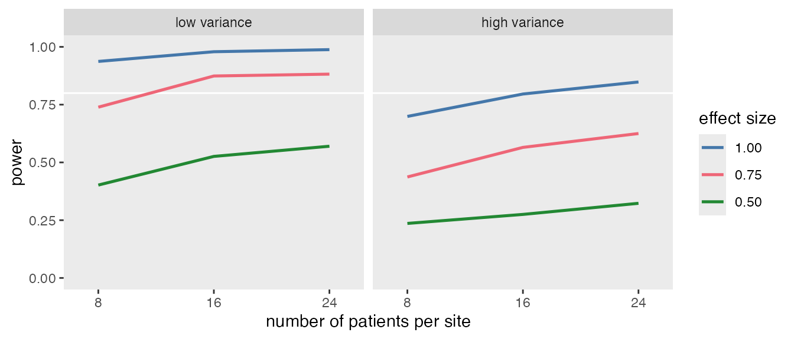

The simstudy package began as a small collection of
functions to streamline data generation for repeated simulations. Over
time, it has grown to include tools that support reproducible simulation
workflows, but the underlying motivation remains the same—replicability
and organization.
This vignette describes a general framework for conducting repeated
data generation and model fitting, a process that arises frequently in
both power analysis and operating-characteristics evaluation. While the
examples use simstudy, the structure is general enough to
apply in many contexts.
The basic workflow involves generating data under a variety of assumptions—such as different sample sizes, effect sizes, or variance levels—and, for each set of assumptions, repeating the data generation many times to mimic sampling from a population.
The process generally starts with three basic steps:
The following code skeleton shows how these components can be organized:
s_define <- function() {
#--- add data definition code ---#
return(list_of_defs) # list_of_defs is a list of simstudy data definitions
}
s_generate <- function(list_of_defs, argsvec) {
list2env(list_of_defs, envir = environment())
list2env(as.list(argsvec), envir = environment())
#--- add data generation code ---#
return(generated_data) # generated_data is a data.table
}
s_model <- function(generated_data) {
#--- add model code ---#
return(model_results) # model_results is a data.table
}
s_replicate <- function(argsvec) {
list_of_defs <- s_define()
generated_data <- s_generate(list_of_defs, argsvec)
model_results <- s_model(generated_data)
#--- add summary statistics code ---#
return(model_results)
}
model_fits <- mclapply(scenarios, function(a) s_replicate(a))The list2env calls make all elements of the scenario
list available as variables inside the function environment. The
scenarios object is a list of parameter scenarios that are
being replicated. Replications can be managed using
mclapply in the parallel for speed, though
lapply or explicit loops work as well.
Simulation scenarios correspond to unique combinations of parameter values used in data generation.
The simstudy function scenario_list automates the
creation of these combinations. It takes vectors of possible values and
returns a list of all combinations. For instance, if parameters
a and b each have two possible values,
scenario_list(a, b) returns four distinct scenarios. Scenarios can also
be grouped when certain parameters should vary together.
a <- c(0.5, 0.7, 0.9)
b <- c(8, 16)
d <- c(12, 18)
# Independent parameters
scenario_list(a, b)## [[1]]
## a b scenario
## 0.5 8.0 1.0
##
## [[2]]
## a b scenario
## 0.7 8.0 2.0
##
## [[3]]
## a b scenario
## 0.9 8.0 3.0
##
## [[4]]
## a b scenario
## 0.5 16.0 4.0
##
## [[5]]
## a b scenario
## 0.7 16.0 5.0
##
## [[6]]
## a b scenario
## 0.9 16.0 6.0
# Grouped parameters
scenario_list(a, grouped(b, d))## [[1]]
## a b d scenario
## 0.5 8.0 12.0 1.0
##
## [[2]]
## a b d scenario
## 0.7 8.0 12.0 2.0
##
## [[3]]
## a b d scenario
## 0.9 8.0 12.0 3.0
##
## [[4]]
## a b d scenario
## 0.5 16.0 18.0 4.0
##
## [[5]]
## a b d scenario
## 0.7 16.0 18.0 5.0
##
## [[6]]
## a b d scenario
## 0.9 16.0 18.0 6.0
# With replications
scenario_list(b, d, each = 2)## [[1]]
## b d scenario
## 8 12 1
##
## [[2]]
## b d scenario
## 8 12 1
##
## [[3]]
## b d scenario
## 16 12 2
##
## [[4]]
## b d scenario
## 16 12 2
##
## [[5]]
## b d scenario
## 8 18 3
##
## [[6]]
## b d scenario
## 8 18 3
##
## [[7]]
## b d scenario
## 16 18 4
##
## [[8]]
## b d scenario
## 16 18 4The full simulation process iterates over each scenario, running many
replications per combination. This can be done locally or distributed
using a high-performance computing framework such as
slurmR.
To illustrate the framework, consider a simple power analysis for a cluster-randomized trial (CRT). The goal is to estimate how power changes with sample size, between-site variance, and effect size.
We’ll fill in the skeleton functions to define and analyze the simulated data.
s_define <- function() {
#--- data definition code ---#
def1 <- defData(varname = "site_eff",
formula = 0, variance = "..svar", dist = "normal", id = "site")
def1 <- defData(def1, "n", formula = "..npat", dist = "poisson")
def2 <- defDataAdd(varname = "Y", formula = "5 + site_eff + ..delta * rx",
variance = "..ivar", dist = "normal")
return(list(def1 = def1, def2 = def2))
}
s_generate <- function(list_of_defs, argsvec) {
list2env(list_of_defs, envir = environment())
list2env(as.list(argsvec), envir = environment())
#--- data generation code ---#
ds <- genData(40, def1)
ds <- trtAssign(ds, grpName = "rx")
dd <- genCluster(ds, "site", "n", "id")
dd <- addColumns(def2, dd)
return(dd)
}
s_model <- function(generated_data) {
#--- model code ---#
lmefit <- lmer(Y ~ rx + (1|site), data = generated_data)
return(data.table(tidy(lmefit)))
}
s_replicate <- function(argsvec) {
list_of_defs <- s_define()
generated_data <- s_generate(list_of_defs, argsvec)
model_results <- s_model(generated_data)
return(list(argsvec, model_results))
}The four parameters—npat (2 values), svar (2 values), ivar (2 values), and delta (3 values)—are specified as vectors. Because the variance parameters are meant to be tested together, they are grouped. This results in distinct scenarios. With 1000 replications per scenario, the scenarios list contains 18,000 objects. The object model_fits will then store the model estimates for each replication:
#------ set simulation parameters
npat <- c(8, 16, 24)
svar <- c(0.40, 0.80)
ivar <- c(3, 6)
delta <- c(0.50, 0.75, 1.00)
scenarios <- scenario_list(delta, npat, grouped(svar, ivar), each = 1000)
model_fits <- mclapply(scenarios, function(a) s_replicate(a), mc.cores = 5)Once the data have been collected, it is quite easy to summarize and create a table or a figure.
summarize <- function(m_fit) {
args <- data.table(t(m_fit[[1]]))
reject <- m_fit[[2]][term == "rx", p.value <= 0.05]
cbind(args, reject)
}
reject <- rbindlist(lapply(model_fits, function(a) summarize(a)))
power <- reject[, .(power = mean(reject)), keyby = .(delta, npat, svar, ivar, scenario)]